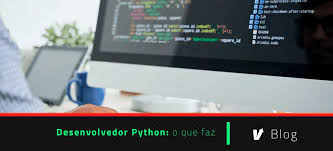
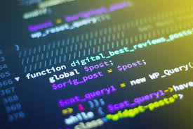

Python é uma linguagem de programação de alto nível,[6] interpretada de script, imperativa, orientada a objetos, funcional, de tipagem dinâmica e forte. Foi lançada por Guido van Rossum em 1991.[1] Atualmente, possui um modelo de desenvolvimento comunitário
, aberto e gerenciado pela organização sem fins lucrativos Python Software Foundation. Apesar de várias partes da linguagem possuírem padrões e especificações formais, a linguagem, como um todo, não é formalmente especificada. O padrão na pratica é a implementação CPython.
Segundo o fundador de Python
o que significa que ele continua a supervisionar o processo de desenvolvimento do Python, tomando decisões quando necessário.[2] Entretanto, em julho de 2018, ele anunciou que estaria se afastando deste função devido a desentendimentos com a equipe de desenvolvimento da linguagem Python. A discussão se deu por conta de discordâncias entre Rossum e a equipe de desenvolvedores, relacionada às novas propostas de atualização (PEP572) que romperia com os padrões de sintaxe da linguagem. A equipe alegava que "a sintaxe não ficaria tão boa para os padrões de Python". De acordo com equipe do Python no Brasil, Guido van Rossum se afasta somente desta função mas continua à frente do projeto.
A linguagem foi projetada com a filosofia de enfatizar a importância do esforço do programador sobre o esforço computacional. Prioriza a legibilidade do código sobre a velocidade ou expressividade. Combina uma sintaxe concisa e clara com os recursos poderosos de sua biblioteca padrão e por módulos e frameworks desenvolvidos por terceiros. Python é uma linguagem de propósito geral de alto nível, multiparadigma, suporta o paradigma orientado a objetos, imperativo, funcional e procedural. Possui tipagem dinâmica e uma de suas principais características é permitir a fácil leitura do código e exigir poucas linhas de código se comparado ao mesmo programa em outras linguagens. Devido às suas características, ela é utilizada, principalmente, para processamento de textos, dados científicos e criação de CGIs para páginas dinâmicas para a web. Foi considerada pelo público a 3ª linguagem "mais amada", de acordo com uma pesquisa conduzida pelo site Stack Overflow em 2018[7] e está entre as 5 linguagens mais populares, de acordo com uma pesquisa conduzida pela RedMonk.[8] O nome Python teve a sua origem no grupo humorístico britânico Monty Python,[9] criador do programa Monty Python's Flying Circus, embora muitas pessoas façam associação com o réptil do mesmo nome (em português, píton ou pitão).
O Python foi concebido no final de 1989[6][9] por Guido van Rossum no Instituto de Pesquisa Nacional para Matemática e Ciência da Computação (CWI), nos Países Baixos, como um sucessor da ABC capaz de tratar exceções e prover interface com o sistema operacional Amoeba[10] através de scripts. Também da CWI, a linguagem ABC era mais produtiva que C, ainda que com o custo do desempenho em tempo de execução. Mas ela não possuía funcionalidades importantes para a interação com o sistema operacional, uma necessidade do grupo. Um dos focos primordiais de Python era aumentar a produtividade do programador.
Python foi feita com base na linguagem ABC, possui parte da sintaxe derivada do C, compreensão de listas, funções anonimas e função map de Haskell. Os iteradores são baseados na Icon, tratamentos de exceção e módulos da Modula-3, expressões regulares de Perl.
Em 1991, Guido publicou o código (nomeado versão 0.9.0) no grupo de discussão alt.sources.[1] Nessa versão já estavam presentes classes com herança, tratamento de exceções, funções e os tipos de dado nativos list, dict, str, e assim por diante. Também estava presente nessa versão um sistema de módulos emprestado do Modula-3. O modelo de exceções também lembrava muito o do Modula-3, com a adição da opção else clause.[10]Em 1994 foi formado o principal fórum de discussão do Python, comp.lang.python, um marco para o crescimento da base de usuários da linguagem.
num = int(input('Digite um valor: '))
if num % 2 == 0:
print('Número PARAR')
else:
print('Número IMPAR')